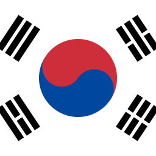

| Pays | Medailles d'or | Medailles d'argents | Medailles de bronzes | Medailles |
|---|---|---|---|---|
| Japon | 2 | 1 | 2 | 5 |
 États-Unis d'Amérique États-Unis d'Amérique |
2 | 1 | 1 | 4 |
| République de Corée | 2 | 1 | 0 | 3 |
| Hong Kong, Chine | 2 | 0 | 0 | 2 |
 France France |
1 | 4 | 2 | 7 |

Escrime
L'escrime, un sport olympique historique
L'escrime est l'un des sports les plus anciens des Jeux Olympiques modernes, figurant au programme dès 1896 à Athènes. À l'origine, seules les épreuves masculines étaient disputées, avec les trois armes : le fleuret, l'épée et le sabre. Les femmes ont intégré la compétition olympique en 1924, lors des Jeux de Paris, avec une première épreuve au fleuret. Sport élégant et stratégique, l'escrime trouve ses racines qui apparaît il y a plusieurs millénaires, puis dans les duels du Moyen Âge et s'est transformée en discipline sportive grâce à la codification des règles par les maîtres d'armes européens. Depuis, elle est restée un pilier des Jeux, offrant des moments spectaculaires et des duels mémorables. Aujourd'hui, l'escrime comprend des épreuves individuelles et par équipes, où chaque nation rivalise de précision, de vitesse et de tactique pour atteindre les sommets olympiques

Les règles et techniques de l’escrime
En escrime, deux concurrents se font face, une arme à la main, et doivent toucher leur adversaire de leur arme sur une zone donnée. Chaque arme dispose de ses spécificités. Le sabre permet de toucher son adversaire avec toutes les parties de la lame (pointe, tranchant et dos). La surface valable comprend le haut du corps à partir de la taille, incluant les bras et la tête. L’épée et le fleuret ne permettent de marquer des points qu’avec la pointe, mais sur l’ensemble du corps (incluant le masque et les chaussures) pour l’épée, et uniquement sur le tronc (buste, épaules et cou) pour le fleuret. L’escrimeur qui atteint quinze points, ou qui en a le plus à la fin du temps réglementaire remporte le combat. Par équipe, c’est la première équipe à 45 points, ou qui en a le plus à la fin du temps réglementaire, qui l’emporte.

Sportifs médaillés


Le Pictogramme

Si l’escrime vous passionne, n’hésitez pas à visiter le site de la Fédération Française d’Escrime pour en savoir plus !